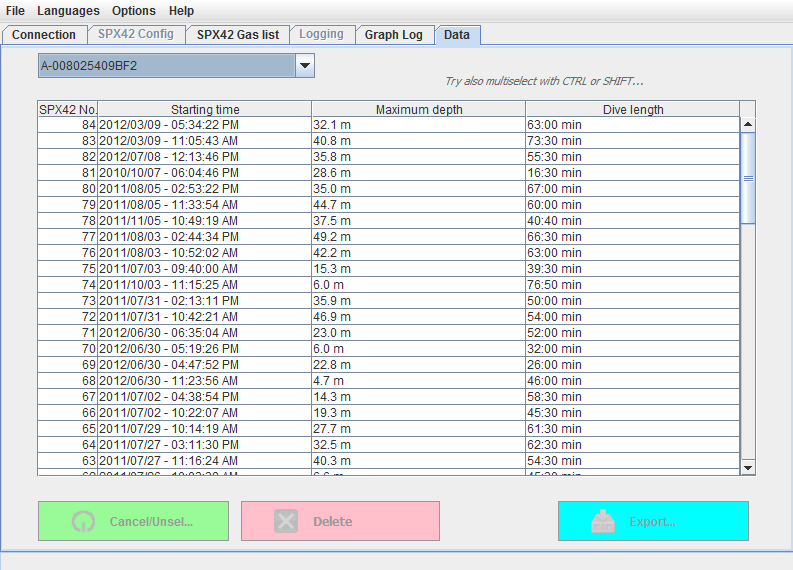
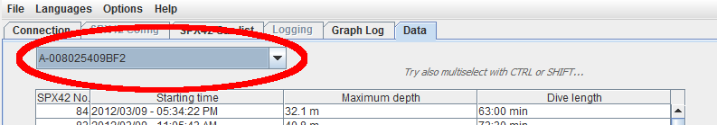
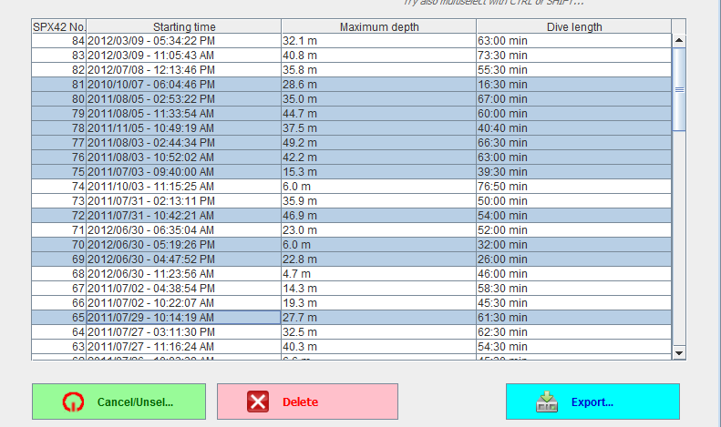

Overview
The file manager allows an overview over the existing data sets and enables
the user to delete unwanted sets or
export sets for further use.

File manager for log files
Display of data sets is again sorted and separated by devices. Selection of
the device for display of Sets is done analogously to visual representation of
logs via the down-down menu in the upper left:

Selection of device for display of data
Contents
Sometimes unwanted files are saved in the database, e.g. from device
maintenance in pressure chambers.
To delete those from the database (NOT the SPX42!) the file manager can be
used.
Selecting entries automatically enables the buttons in the lower part of the
program window:

Entries selected, buttons enabled
Pressing the button 'Cancel/Unselect' undoes the selection of entries and
disables the buttons again.
To delete the data sets from the internal database, click the 'Delete' button.
The program will ask 'Are you sure?' for confirmation. After confirmation by
clicking 'Delete!' the sets will be deleted permanently.
Contents
At the moment export is supported in the UDDF-format. The UDDF format is a
universal file format for the exchange of diving related data and is an
application of the XML-standards. It therefore is a text formatted by strict
but simple rules.
Clicking the 'Export' button after selecting the wanted data sets will
immediately export the files to the directory specified in the
Properties menu. The program default for
'Export' is within the program's main directory.
The export file's name is composed of the device number and a string including
date and time of the dive. The file extension is '.uddf'.
An application (preferred by the author) is maintaining a personal log using
the 'Diving Log'-software
by Sven Koch.
Contents